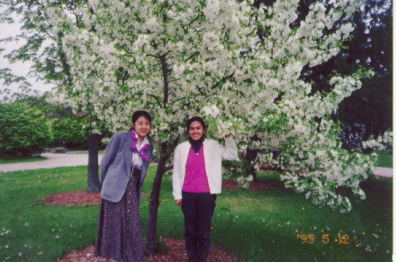

ホアナ(Juana) (95.5)
学校で

|
ホアナ(Juana)と出会ったのは、ここに来た年（１９９４年）の９月。彼女は私の語学学校のクラスメートでした。それから次の年の５月まで一緒でした。彼女は私より２歳年上、カソリックのシスターです。ペルー出身で、母国語はスペイン語。でもここで生活するには英語が必須なので英語の勉強に来ていたのです。私たちは授業以外にも一緒にお弁当を食べたり、散歩したりしました。 私はこの頃、自分の進路が全く見つからず、なんとかつじつまを合わせて、周りや自分を納得させてここに来たものの、この先どうすればいいのか何もわからない状態でした。特に私は全く英語がしゃべれない状態だったのですが、不思議とホアナには心が通じたのか、私のことを理解してくれました。私はホアナにいろいろなことをしゃべりました。やってきたこと、やりたいこと、迷っていること、今でも、もしあの時にホアナがいてくれなければ今の私はなかったのかもしれない、と感じます。 ホアナがカソリックのシスター（尼さん）になろうと決めたのは２５歳の時です。それからいろいろな審査があって、受け入れられたのは２９歳の時だそうです。そして私と会う前の年にアメリカへ来たのです。カソリックのシスターは結婚しません。（が、結婚するならばシスターでなくなるだけで、信仰を捨てる必要はないそうです。）共同で一つの場所に住みます。仕事はしますが収入は個人のものではありません。 これから先、ずっとそういう生活をするのです。私はいつも、どうしてそんなに早く自分の進路を決めてしまえるのか、と聞く、というよりも問い詰めていました。 私はもともと「神様のような人は嫌い」というタイプです。そんな誰からも嫌われなくて、何を言われてもにこにこしている人には近づきたくないと思ってしまう人間ですが、ホアナはまさにそういうタイプの人です。でもにこにこしているからと言って、頭が悪いというわけではもちろんなく、必要ならきちんと意見を言ってくれます。彼女はたぶん、相手をきちんと理解する人なのだと思います。そして矛盾のない意見を持っているのだけれど、それを自分から出すということはしないのです。 彼女は休日に私の家に遊びに来たり、私が彼女の修道院に遊びに行ったりしました。最初のクリスマスには私を招待してくれました。そこで他のシスターにも会いましたが、皆、歓迎してくれました。なんだかそれまでの「シスターは私とは正反対」というイメージは飛び去ってしまいました。 私たちが仲良くなれたのは、私が彼女を大好きだったことと、彼女も私を友達だと思ってくれたことだと思います。シスターになると、どこか他の国で布教活動（？）のようなものをしなくてはならないようです。彼女はバングラディッシュに行くことを希望していましたが、結局は第２希望のカンボジアに決まりました。何がそんなに彼女にバングラディッシュを希望させたのかは、今一つよくわからないのですが、とても行きたがっていたことはわかっていました。彼女が私に暗い声で電話をくれた時初めて、「シスターでも落ち込むことがあるんだ」と驚いたのを覚えています。 でもホアナは気を取り直して、カンボジアの言葉、クメール語の勉強を始めました。私は念のため、「私のために行かないで」と言ってみましたが、だめでした(^^;。今、彼女はカンボジアにいます。私は、日本に帰って働いてお金がたまったら会いにいく、と約束しています。だから私が今、一番行きたい国は、カンボジアです。 *2000年、理由があって彼女はシスターを辞めました。が、2002年現在、今もカンボジアに住んでいます。 |

=ホアナ(Juana)と私(96.2)=
|
これは授業の最後の日に学校でとりました。ここニューパルツは５月に、木々は一斉に花が咲き乱れます。日本だと３月が別れの季節ですが、ここでは５月です。ちょっともの哀しいですね。せめて花があってよかった。 ちなみに現在、彼女とは e-mail でやりとりをしています。私の送った手紙が何度もなくなってしまい悲しかったのですが、メールのやりとりができるようになるなんて。。。この冬、彼女は一時帰国したので、会いに行ってきました。その時に写真を見せてもらって、私はますますカンボジアに行ってみたくなりました。 |
[ホームへ] [写真一覧へ]